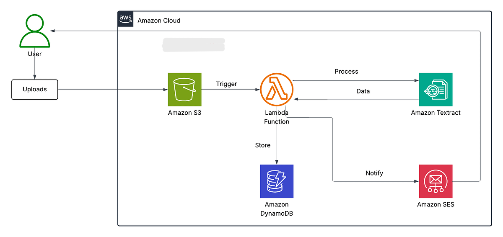

AWS Receipt Processing System Overview
Project Overview:
I built a cloud-based receipt processing system that automatically extracts key data from uploaded receipt images. Users upload a receipt through a web interface, the file is stored securely in Amazon S3, and AWS Lambda processes the image using Amazon Textract to identify vendor, date, total amount, and line items. The extracted information is saved in DynamoDB and displayed back to the user in a clean frontend. The system is serverless, scalable, and designed to simulate a real-world business tool for automating expense tracking.
Architecture Overview
1. Chose a fully serverless approach for low cost and scalability.
2. Defined the workflow:
- frontend.
- APIGateway.
- Lambda.
- Amazone S3.
- Amazon Textract.
- DynamoDB.
Steps taken to complets this project :
1. Create an Amazon S3 bucket
.png)
.png)
- Configured secure storage for uploaded receipt iamges.
- Enabled bucket events to trigger Lambda on "file upload".
2. Built the Lambda processing function
.png)
.png)
.png)
Wrote Python code to:
- Receive the S3 event.
- Read the image.
- Send it to Amazon Textract.
- Parse the extracted text.
- Save structured data to DynamoDB
3. Intergrated Amazon Textract
.png)
.png)
- Used Textract's OCR to recognize receipt text.
- Extracted fields like vendor, subtotal, VAT, date, etc
4. Created a DynamoDB Table
.png)
.png)
- Stored results using Lambda after text extraction
5.Exposed backed using Amazon APIGateway
.png)
Created a Rest endpoint for the frontend:
- /upload - returns a pre-signed URL to upload.
- Enabled CORS so the broswer could access it.
6. Built th frontend
.png)
.png)
.png)
Simple static website with :
- HTML form for uploading a receipt.
- Javascript handling file upload via API APIGateway.
- Displaying processed results to the user.
7. Added email option
.png)
.png)
.png)
.png)
Added a simple user choice:
- Receive results in UI.
- Get results via email.
Used AWS SES to send formatted data.
Results
A fully serverless, automated receipt processing app that turns uploaded images into structured, usable data. It demonstrates real cloud architecture, automation, and integration of AI using Textract.